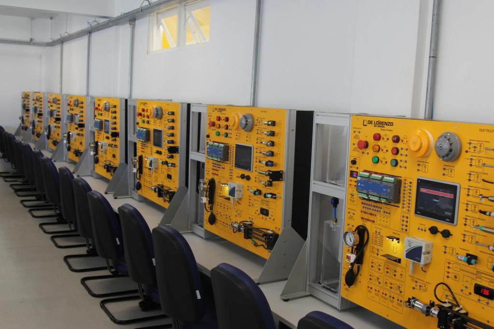

Qual o papel dos sensores e atuadores na indústria?
Os sensores e atuadores são indispensáveis para a atividade industrial moderna. Se válvulas e registros usados nas antigas máquinas a vapor impulsionaram a primeira revolução industrial, os dispositivos modernos oferecem controles mais precisos e automatizados para viabilizar a Indústria 4.0.
Para nos guiar em uma reflexão sobre a coleta de dados na fábrica, vamos contar com toda a experiência de Filipe Faifer, especialista de sensores e segurança, que forneceu cada um dos detalhes que praticamente transcrevemos para você abaixo. Confira as informações e saiba aplicá-las para melhorar o desempenho!
Para esclarecer, é fundamental mencionar que a instalação de sensores não tem por finalidade a comunicação industrial. A função desses dispositivos é a de capturar dados do ambiente e transmiti-los aos controladores. Para que esta transmissão seja feita com rapidez, qualidade e segurança, podemos utilizar a redes de comunicação industrial, esse sim, o meio pelo qual a informação trafega.
Feita essa observação, Filipe reforça o papel dos sensores na indústria com o argumento de que “eles são responsáveis por transformar em sinais elétricos as informações do meio físico — como volume, posição, presença, temperatura, pressão e outros presentes nos diversos processos industriais”.
Isso possibilita que os controladores tenham dados suficientes para executar a lógica de processamento, mantendo as plantas em funcionamento. Portanto, eles são determinantes para melhorar eficiência operacional. Afinal, os atuadores agem diretamente no processo industrial baseados nos comandos que são enviados pelos controladores.
Nesse processo, também merece destaque a rede de comunicação ou protocolo de comunicação, que é uma forma padronizada de troca de informações entre dois os mais dispositivos. Existem diversos tipos de redes de comunicação, por exemplo:
EthernetIP;
Devicenet;
Controlnet;
Profibus;
I/O Link.
Sensores (Entrada de dados):
- Função: Detectam estímulos físicos/químicos do ambiente.
- Exemplos: Sensores de presença, temperatura (PT100/termopares), ultrassônicos (nível), proximidade (indutivos/capacitivos) e encoders
- Papel: Monitoram o sistema para garantir o funcionamento correto.
Atuadores (Saída/Ação):
- Função: Executam ações físicas, convertendo energia elétrica, pneumática ou hidráulica em energia mecânica.
- Exemplos: Motores elétricos, cilindros hidráulicos/pneumáticos, válvulas de controle e relés.
- Papel: Aplicam força ou movimento para corrigir ou alterar o processo.

Sensores e Atuadores IoT
A IoT adiciona atuadores às redes de computadores e o controle do mundo físico que eles fornecem adiciona camadas de complicação aos aplicativos da IoT. No passado, problemas de sistema como erros de software, violações de segurança de computadores ou falhas de componentes podiam causar uma preocupação significativa aos gerentes de TI, porque seus dados podiam ser corrompidos, perdidos ou roubados. Quando os atuadores são adicionados à rede – especialmente se esses controladores controlam sistemas poderosos ou perigosos, como locomotivas, reatores, subestações, veículos ou dispositivos médicos – se os sistemas são hackeados ou sofrem falhas, podem ocorrer danos sérios à propriedade, ferimentos pessoais ou até a morte. Portanto, precisamos ter um cuidado especial com os dispositivos conectados (as coisas do IoT) como integridade e segurança do sistema, caso os atuadores forem incluídos.